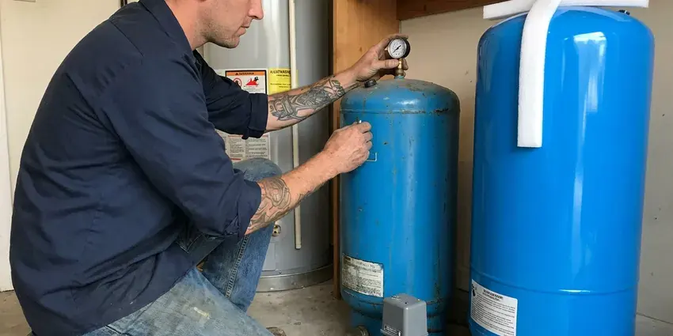

Gas Water Heater Replacement in Lehi, UT
Our licensed plumbers replace 40, 50 and 75 gallon gas water heaters in Lehi, UT with brands built to handle your local water.
- Same-Day Tank Swaps
- Gas Leak Testing Every Job
- Leak Test On Every Install
- Old Heater Haul-Away Included
New Gas Water Heater, Installed and Tested in Lehi, UT.
Most gas water heater replacements are done in about three hours.
Gas Water Heater Swaps in Lehi, UT
BPK Plumbing replaces gas water heaters for homes across Lehi, UT, and we see the same wear on Utah plumbing over and over: sediment in the tank bottom and corroded fittings at the top. Each one cuts years off a tank. The new install is set up so you can flush it and check the anode.
Our expertise includes:
- Atmospheric, power vent and direct vent gas tank replacements
- Licensed and Insured Gas Water Heater Installers
- Soap-tested gas line connections and venting.

Additional Plumbing Replacement Services in Lehi, UT
When repairs are no longer enough, our replacement services in Lehi, UT deliver modern, efficient equipment installed right.


Customers
Why Choose BPK Plumbing for Gas Water Heater Replacement in Lehi, UT?
Our team works on every type of gas water heater common in Utah, from basic atmospheric tanks to power vent and condensing models. That range helps. We rarely see a setup we have not handled.
- Local Experience, BPK Plumbing knows the plumbing in Lehi, from sediment-heavy tanks to gas lines that need a drip leg.
- Code Knowledge, Our plumbers work to Utah building code and local rules for gas appliance installs.
- CO Protection, We check for gas leaks and confirm the vent drafts to keep carbon monoxide outside.
Citywide Coverage
Hot water service reaches every part of Lehi. Wherever you are, we can usually be there within a few hours with a replacement tank on the truck and the tools to install it. Evening slots are open.
Experienced Team
Technicians at BPK Plumbing have years of hands-on time with gas heaters and keep current on code changes in Lehi, UT. Code changes often. Our crew keeps pace.
Safety-First Approach
Start-up is where we slow down. After the tank fills and the air is bled from the hot lines, we light the burner, watch the flame and confirm the draft pulls before leaving. National and local gas codes apply.
Trusted Certified Lehi Plumbing Services Professionals
At BPK Plumbing, we take pride in licensed, certified plumbing services throughout Lehi, UT. Those papers on the wall mean something. Every repair, install and maintenance visit follows strict safety and quality rules, and the plumbers doing the work carry recognized industry credentials.
Call Us Now PHCC Plumbing Contractor Recognition
PHCC Plumbing Contractor Recognition Better Business Bureau (BBB) Accreditation
Better Business Bureau (BBB) Accreditation Angi Certified Pro
Angi Certified Pro ISO 9001 Quality Management Certification
ISO 9001 Quality Management CertificationPicking a Gas Water Heater for Your Lehi, UT Home
Commercial Gas Tank Replacement in Lehi
Laundromats and multi-unit buildings work commercial tanks so hard that replacement comes on a predictable schedule rather than as a surprise. Installs get scheduled during your slow hours. Venting and gas work may be extra.

A.O. Smith Gas Water Heater Service in Lehi
A.O. Smith makes tanks under its own name and also builds the State line, so parts overlap a lot between the two brands. We handle the sizing and the gas connection. We confirm the vent meets their specs.
Atmospheric Vent Gas Water Heater Replacement in Lehi
Atmospheric vent heaters last 10 to 12 years on average, and the end usually shows up as rusty hot water or a slow drip from the bottom. We disconnect the old unit and reconnect the new one to the existing gas line and flue. Closets need enough combustion air. We confirm a closet install has louvers or ducted air before we light the burner.
Rheem Gas Water Heater Service in Lehi, UT
Rheem tanks and their Ruud twins share most parts, which helps when a gas valve fails a few years in. We install both. We set them up per the factory manual and test draft.
Standard Gas Water Heater Replacement in Lehi
A standard 40 or 50 gallon atmospheric tank is what most homes have, and swapping one like for like is a two to three hour job when the venting and gas line are in good shape. The old tank gets drained and hauled off, and the new one goes on a pan. Every install gets new gas and water connectors. We soap-test the gas joints and check the draft hood with the burner lit.
Tankless Gas Conversion in Lehi
Going tankless usually means a bigger gas line, since a whole-house tankless unit can draw 199,000 BTU against the 40,000 a tank burner uses. The 1/2-inch line feeding a tank is rarely enough. New venting is part of it. We check meter capacity and pipe length before quoting so there are no surprises halfway through the job.
High-Efficiency Gas Water Heater Upgrades in Lehi, UT
Condensing gas tanks run around 90 percent efficient or better and vent through PVC, while a standard atmospheric tank sits closer to 60 percent. You will need a condensate drain and a nearby outlet. Payback depends on usage.

Commercial Gas Water Heater Service in Lehi, UT
Higher BTU inputs on commercial units mean bigger gas lines and larger vent sizes, plus a permit and inspection in most jurisdictions. We handle all of it. Downtime stays short.
Gas Water Heater Replacement Near Me in Lehi, UT
As a local Utah company, we know the housing stock around Lehi, from 1960s ranch homes with closet heaters to new builds with garage platforms. That speeds up diagnosis. We usually know what we will find before the truck door opens.
Permits and inspections are routine for us in Lehi. We can tell you right away whether your venting and gas line will work with a new tank, or whether something has to change first. You get a firm price up front.
BPK Plumbing at a Glance
- Fully licensed plumbing team covering Lehi, UT
- 24/7 emergency service with same-day scheduling
- Upfront, flat-rate pricing before work begins
- 4.8-star rated by 470+ Utah customers
Lehi Map
Lehi Information
- Population
- 90,227
- Area codes
- 801/385/435
- Service area
- Lehi and communities within 40 miles
- Nearby
- Saratoga Springs, Draper, Herriman, Eagle Mountain
Sediment and age wear down gas tanks in Lehi, UT, so a properly installed replacement matters for both comfort and safety.
Talk to a Plumber
Call BPK Plumbing for reliable plumbing work done by licensed pros in Lehi, UT.
Our Specialized Plumbing Services in Lehi, UT
At BPK Plumbing, we handle the full list of plumbing services across Lehi, UT. We go from leak detection all the way to full system installations, for homes and commercial buildings, and we do it quickly at a fair price. Take a look at our core services below:


Our Gas Water Heater Replacement Steps in Lehi, UT
Every gas tank swap in Lehi follows the same sequence: shut off, remove, install, test.
Schedule a Visit
Call BPK Plumbing at (385) 543-4073 to book. We give you an honest estimate for the replacement.
On-Site Check
Our technician looks over the current heater, the gas line and the vent to confirm the best replacement.
Swap the Heater
We remove the old unit, install the new gas tank, connect gas and water, set up the vent and run a full safety check.
Frequently Asked Questions About Gas Water Heater Replacement in Lehi
Plan on $1,200 to $3,000 with the tank and labor included. The model and capacity matter most, followed by any changes to the gas line or the vent that the new tank needs to meet current code. A quick look comes first.
Manufacturer warranties run 6 to 12 years on the tank, depending on the model. Our installation warranty sits on top of that and covers the connections, the venting and the relief valve piping we installed on the day. Parts coverage is shorter.
Atmospheric vent heaters rely on hot exhaust rising up a metal flue on its own. Power vent models use a fan to push exhaust out through plastic pipe, which lets them vent sideways through a wall and often burn a bit more efficiently. Power vents need an outlet.
Most swaps run three to five hours. Power vent conversions or relocations take longer, often a full day, because of new venting and gas work. The timeline is part of the quote.
Yes, in most of Lehi, UT. Gas water heater replacement usually requires a permit because it involves gas piping and venting, and an inspector may check the install afterward. We pull it for you.
Annual flushing and an anode check every few years are the main things. Most gas tanks die from sediment, which sits on the burner side and cooks the steel until it fails. Have it looked at now and then.
Flush the tank once a year. A yearly flush keeps sediment from hardening, and an anode check every three years catches a spent rod before the tank rusts. Proper sizing helps too.
In most cases, yes. Common tanks are on the truck, and most swaps take about three hours.
What Our Customers Say About Our Plumbing Experts

Monica A.
Our water bill nearly doubled in one month with no change in how we used water. The tech checked the meter, heard the leak under the hallway with his equipment, and opened a hole about a foot square. Fixed the same day.
Slab Leak Repair · South Jordan, UT
Lisa C.
Water was pouring out from under the washing machine on a holiday weekend. BPK Plumbing talked me through closing the valves over the phone and had a plumber at the house within ninety minutes. It was a burst fill hose.
Emergency Plumbing · Eagle Mountain, UT
Karen W.
After our third pinhole leak in copper, we stopped patching. BPK Plumbing gave us a written plan room by room and repiped the house in PEX while we stayed in it. The crew covered our floors every morning and cleaned up every night.
Repiping · Eagle Mountain, UT
Marcus H.
Grease from the fryer line kept clogging the kitchen drain at my diner. BPK Plumbing hydro jetted the line after closing, showed me the buildup on camera, and set us up on a quarterly cleaning so it does not catch us on a Friday again.
Drain Cleaning · Draper, UTJessica T.
We were adding a gas range in a kitchen remodel and needed a new line run from the meter. The plumber pulled the permit, ran the pipe through the crawl space, and had it inspected and approved within the week.
Gas Line Repair · Sandy, UTJames P.
Our restaurant had a slow leak at the hand sink that was rotting the cabinet base. BPK Plumbing came in at six in the morning before prep, replaced the trap and both supply lines, and was packed up before my first cook clocked in.
Commercial Plumbing · Eagle Mountain, UT